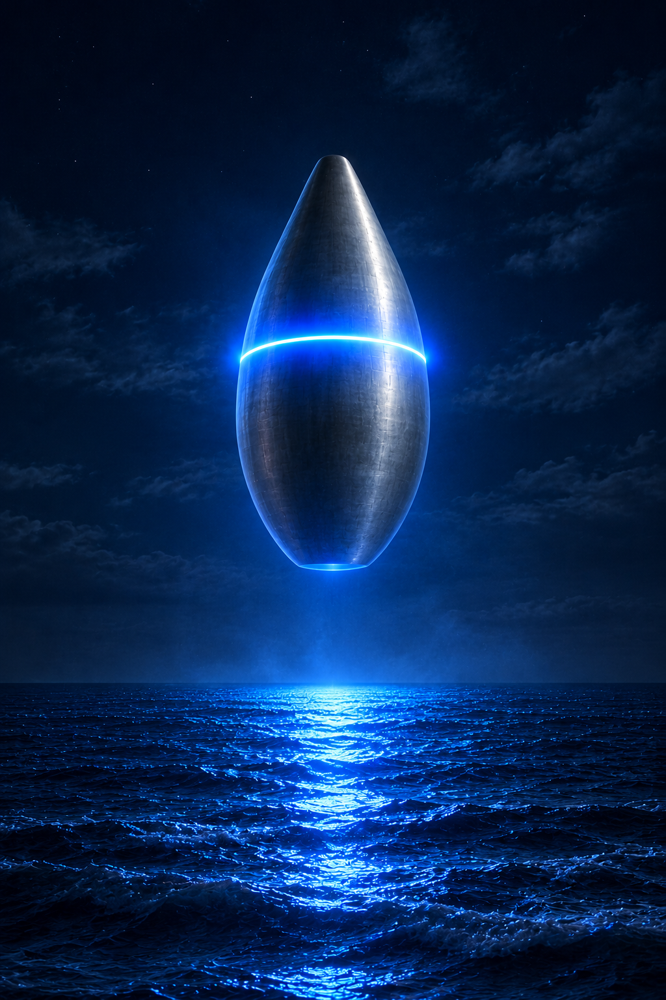

Description
It was sometime in November 1992, although I can no longer remember the exact date. It was approximately 1:20 a.m., and I was walking along the promenade beside the ocean at Cronulla Beach, New South Wales, Australia. I was accompanied by a friend, whose identity has not been disclosed out of respect for their privacy.
It was late at night, and the darkness stretched across the ocean. As I walked along the promenade, my attention was suddenly drawn to something unusual happening out at sea, approximately one kilometre from the shoreline.
At first, I noticed a faint brightness coming from the surface of the water. It was unlike anything I would normally expect to see over the ocean at that time of night. As I watched, the light began to intensify. It grew progressively brighter, developing into a distinct, vivid blue glow that appeared to illuminate the water around it.
I continued watching, trying to understand what I was seeing. Then something extraordinary happened.
A vessel appeared to rise directly out of the ocean. It emerged from the water and ascended until it was approximately 50 metres above the surface. It then stopped and hovered in the air.
I remember watching it remain suspended above the ocean for what I estimate was around 30 seconds. During those moments, I had the opportunity to observe its shape and appearance.
The vessel had a smooth, greyish metallic surface, approximately 30m in length. Its shape was unlike any conventional aircraft I was familiar with. It was elongated and resembled a narrow pear or a teardrop, tapering towards the top and narrowing again towards the lower end.
One of its most distinctive features was a brilliant blue band of light encircling the body of the vessel. The band was positioned approximately three-quarters of the way down from the top, forming a luminous ring around its metallic exterior. The blue light was striking against the darkness of the night.
What particularly stood out to me was the apparent absence of any visible windows, doors or other obvious openings. I could not see anything resembling a cockpit, wings, a tail or conventional propulsion systems. Its exterior appeared smooth and metallic, with the vivid blue ring being its most prominent feature.
The vessel remained motionless above the water for approximately 30 seconds. Then, without any apparent warning, it accelerated upwards.
What happened next is the part of the experience that has remained so remarkable in my memory. The vessel shot upwards into the night sky with extraordinary speed. Its movement appeared almost instantaneous compared with anything I would normally associate with an aircraft.
There was no sound. I did not hear an engine, a roar, a whistle or any other audible indication of propulsion. Despite its apparent acceleration, the vessel made no discernible noise that I could hear from where I was standing.
Within moments, it had disappeared into the darkness above. I was left standing on the promenade, looking out towards the ocean and the sky, trying to make sense of what I had just witnessed.
I could not identify the object, and I had no explanation for its apparent movements. I have never forgotten that night.
I cannot say with certainty what the vessel was, where it came from or how it was able to move as it appeared to. I can only describe what I remember seeing that night at Cronulla Beach in November 1992.
For me, it remains an unexplained sighting of an unidentified flying object—an extraordinary experience that has stayed with me for more than three decades. I know what I remember seeing. What the object actually was remains an unanswered question.
Source Material


Source: Personal testimony of Andreas P. Illustrations generated based on witness description.
Notes
This case remains under investigation. If you witnessed this event or have additional documentation, please contact us via the Report a UAP form.